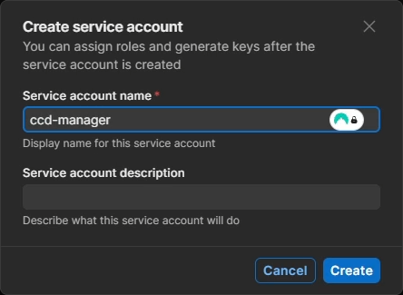
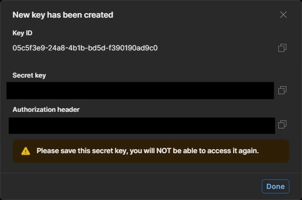
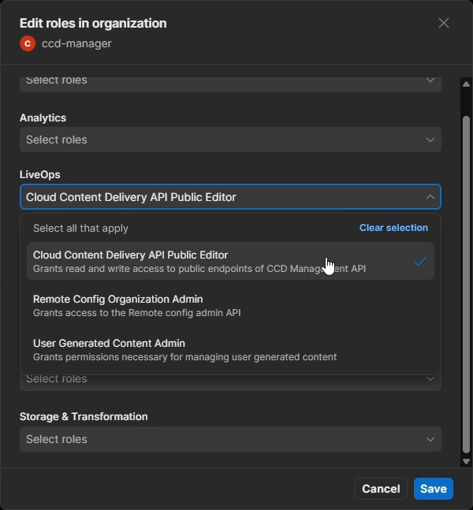
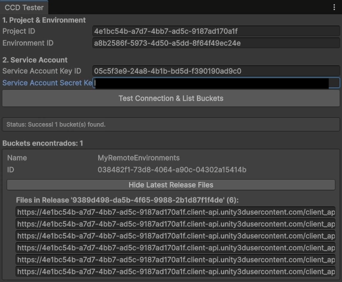
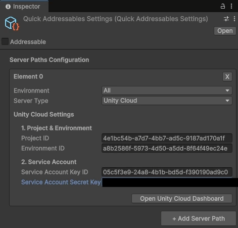
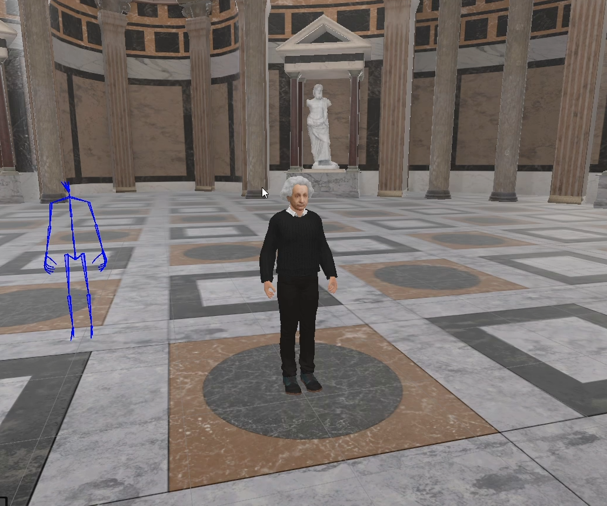

Configuring the Main Project (Consumer)
The main VRUnited project acts as the consumer of the remote assets. It does not need the original prefabs or the CCD upload tools. Instead, it dynamically discovers and downloads content from Unity Cloud Content Delivery using a Service Account.
1. Create a Service Account
To allow the main project to securely query the Unity Cloud API and discover your remote buckets, you must create a dedicated Service Account.
- Log into the Unity Cloud Dashboard and select the Unity Cloud Project you created during the "Setting Up CCD" phase.
- Access your organization's administration profile. To do this, click the button with your organization's name in the top right corner to open the dropdown menu, and select Manage organization.
- In the left-hand navigation menu, select Service accounts.
- Click the + New button in the top right corner.
- Give the service account a descriptive name (e.g.,
ccd-manager) and click Create.

2. Generate and Store Keys
Once the Service Account is created, you must generate the security keys required for authentication.
- In the Service Account details page, locate the Keys section and click + Add key.
- A dialog will appear displaying the new Key ID and the Secret key.
- Crucial Step: You must copy and save the
Secret keyimmediately (e.g., in a temporary Notepad file). For security reasons, Unity will never display this Secret key again once you close the dialog. - Click Done.

3. Assign Permissions
For the Service Account to function, you must grant it specific roles to access your project's Cloud Content Delivery data.
- Scroll down on the Service Account page to the Organization roles section.
- Click + Manage organization roles.
- Under the LiveOps category, check the Cloud Content Delivery API Public Editor role and click Save.

4. Check Remote Assets Access
With the credentials ready, you must configure the VRUnited main project to use them for discovering the remote environments.
- Open the main VRUnited Unity project.
- Navigate to VRUnited > Test CCD Connection from the top menu.
- A custom window will appear. Input your Project ID and Environment ID (these can be found in the Cloud Dashboard under your project's CCD settings).
- In the Service Account section, input the Key ID and the Secret Key you generated in Step 2.
- Click the Test Connection & List Buckets button.
- If successful, the window will list the buckets found in your cloud environment. Click List Latest Release Files to verify that your uploaded
.hashand.bundlefiles are properly discovered.

5. Configure the Server Path
Finally, you must permanently store these connection settings in the project so the dynamic loading system can find the remote catalogs at runtime. VRUnited handles this through a dedicated configuration asset.
- In the Project window, navigate to your Resources folder and locate the
QuickAddressablesSettingsobject. - This asset contains a list of
ServerPathDataconfigurations. Each path definition includes:- Environment: Specifies where this path is valid (e.g., Editor, Build, or Both).
- Server Type: A dropdown to select the distribution method:
Local: Uses a local path on the device (can be relative to theAssets/folder). Ideal for testing.PHP Server: (Legacy) The old remote distribution system. (Not recommended for new assets).Unity Cloud: The new dynamic remote asset system using CCD.
- In the Inspector, create a new server path and set its Server Type to Unity Cloud.
- When
Unity Cloudis selected, the generic Path field is replaced by specific cloud credential fields. Input your Project ID, Environment ID, Service Account Key ID, and Service Account Secret Key. TheQuickAddressablesManagerwill automatically use these attributes to build the correct remote URL dynamically at runtime to locate and load the catalogs.

6. Checking Remote Assets in Play Mode
To verify the entire workflow, run the application in the Editor. We will test loading both a remote avatar and a remote scene simultaneously.
- Press the Play button in the Unity Editor.
- Navigate through the VRUnited main menu and select ether Solo mode or Multiplayer, in case that you want to test it with multiple participants.
- When you reach the Avatar Selection screen, you can unlock avatars by their ID. In order to do so, select Add Avatar and in the text field, input the exact ID of the remote avatar you configured earlier (e.g.,
albert). When you are happy with your avatar, click on Select. - Proceed to create a virtual room by selecting Create Room. Then select the environment that will be used for this session. Your remote scene (e.g.,
My Pantheon) should now appear automatically discovered alongside the local basic scenes that you have defined. - Click on the remote scene (
My Pantheon). - The application will dynamically connect to the CCD, download the necessary
.bundlefiles for both the scene and the avatar, and instantiate them together. You should now see your remote character correctly loaded inside your remote environment.
